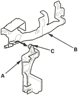
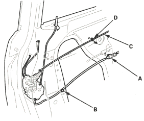

- If necessary, remove the cylinder rod protector (A) from the outer handle protector (B) by releasing the hook (C).

- Install the handle in the reverse order of removal and note these items:
- Make sure the cylinder switch harness is routed properly (for some models).
- Make sure the cylinder switch connector is plugged in properly (for some models) and each rod is connected securely.
- Make sure the door locks and opens properly.
- When installing the lock cylinder, leave the outer door handle bolts loose so the inner protector does not interfere with the lock cylinder, then tighten the handle bolts.
- Install the lock cylinder retaining clip on the handle, then install the lock cylinder. Be sure the clip is fully seated in the slot on the lock cylinder.
NOTE: Put on gloves to protect your hands.
- Raise the glass fully.
- Remove these items:
- Door panel (see page 20-4)
- Plastic cover, as necessary (see page 20-2)
- Centre lower channel (see step 3 on page 20-6)
- On driver's and some passenger's, disconnect the cylinder rod (see step 4 on page 20-6).
- If equipped, release the cylinder rod protector from the latch (see step 7 on page 20-7).
- Disconnect the outer handle rod (see step 8 on page 20-7).
- Disconnect the actuator connector(s) (A) and for some models, detach the harness clip (B) and actuator connector. Release the inner handle cable (C) from the door by detaching the cable clip (D).
KE model:
